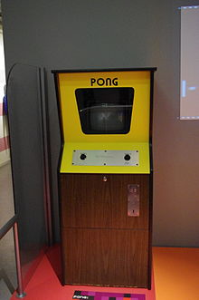
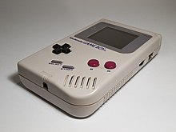

Los orígenes del videojuego se remontan a la década de 1950, cuando poco después de la aparición de las
primeras computadoras electrónicas tras el fin de la Segunda Guerra Mundial, se llevaron a cabo los primeros
intentos por implementar programas de carácter lúdico. Así, fueron creados el Nim (1951) o el Oxo (1952),
juegos electrónicos que aún no pueden ser denominados videojuegos, y el Tennis for Two (1958) o el Spacewar!
(1962), auténticos pioneros del género. Todos ellos eran todavía prototipos, juegos muy simples y de
carácter experimental que no llegaron a comercializarse, entre otras cosas, porque funcionaban en unas
máquinas que solo estaban disponibles en universidades o en institutos de investigación.

La consola Magnavox Odyssey (1972).
No sería hasta la década de los 70 en que, con el descenso de los costes de fabricación, aparecieron las
primeras máquinas recreativas y los primeros videojuegos dirigidos al gran público. Títulos como Computer
Space (1971) o Pong (1972), de Atari, inauguraron las primeras máquinas recreativas construidas al efecto,
que funcionaban con monedas. Poco después llegarían los videojuegos a los hogares gracias a las consolas
domésticas, la primera de las cuales fue la Magnavox Odyssey (1972), y más tarde la exitosa Atari 2600 o VCS
(de 1977), con su sistema de cartuchos intercambiables. Por aquel entonces las máquinas de arcade empezaron
a hacerse comunes en bares y salones recreativos, una expansión debida en parte a un matamarcianos que
alcanzó gran popularidad, el Space Invaders (1978). Otros juegos que marcaron esta primera época fueron
Galaxian (1979), Asteroids (1979) o Pac-Man (1980).
La consola portátil Game Boy (1989).
En los años 1980, la empresa norteamericana Atari tuvo que compartir su dominio en la industria del
videojuego con dos compañías llegadas de Japón: Nintendo (con su famosa consola NES) y SEGA (con la Master
System). Paralelamente, surgió una generación de ordenadores personales asequibles y con capacidades
gráficas que llegaron a los hogares de millones de familias, como fueron el Spectrum, el Amstrad CPC, el
Commodore 64 o el MSX. A partir de entonces, los videojuegos empezaron a convertirse en una poderosa
industria. Fue además una época muy creativa para los desarrolladores de videojuegos; muchos de la
principales géneros que existen hoy en día (conducción, lucha, plataformas, estrategia, aventura...) tomaron
forma en esta década. Por otra parte, aparecieron también las primeras consolas de bolsillo, también
conocidas como «maquinitas», que aunque hasta la llegada de la Game Boy de Nintendo (1989) solo ejecutaban
un juego cada una, alcanzaron gran popularidad entre los más jóvenes.

Los años 1990 traen el salto a la tecnología de 16-bit (como la SNES y la Mega Drive), lo que traía consigo
importantes mejoras gráficas. Entra en escena el gigante Sony con su primera PlayStation (1994), mientras
Nintendo y Sega actualizan sus máquinas (Nintendo 64 y Sega Saturn). En cuanto a las computadoras, el
progreso de los PC termina por barrer del mapa a los demás sistemas salvo el de Apple. Aparecen juegos cada
vez más avanzados tecnológicamente, como los juegos de tiradores, también llamados shooters en 3D. Estos
comenzaron siendo en tercera persona pero a través de la implementación de técnicas de cámara en primera
persona, se convirtieron en lo que a día de hoy se denomina Juegos de tiradores en primera persona o FPS. En
el año 2002 entra Microsoft en el sector de las videoconsolas con su Xbox, En 2001 se lanza la Gamecube y en
el 2006 Nintendo lanza su innovadora Wii. Entretanto, Sony actualiza su exitosa PlayStation (versiones II y
III), y en los PC, gracias a la expansión del Internet, cobran protagonismo los juegos en línea y
multijugador.
Por último, en la década de 2010 emergen como plataformas de juegos los dispositivos táctiles portátiles,
como los teléfonos inteligentes y las tabletas, llegando a un público muy amplio. Por otro lado, varias
empresas tecnológicas empiezan a desarrollar cascos de realidad virtual, que prometen traer nuevas
experiencias al mundo del entretenimiento electrónico.